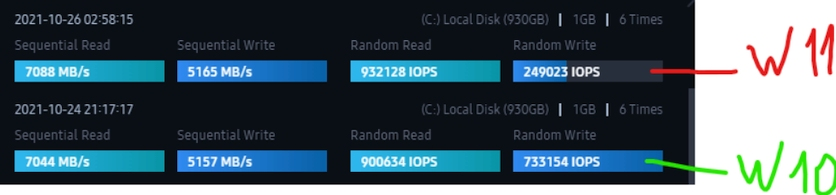

Windows 11 начала «резать» скорость работы SSD
В сети начало расти количество жалоб пользователей на работу Windows 11 с твердотельными накопителями. По словам их владельцев, операционная система без видимых причин начала заметно снижать скорость работы SSD. Проблема затронула разные модели комплектующих, и пока не имеет решения, за исключением отката на предыдущую версию операционки.
Судя по жалобам владельцев NVMe-накопителей на официальном форуме Microsoft, после установки новой ОС скорость произвольного чтения его SSD упала на 45%. В комментарии к публикации другой «пострадавший» отметил, что смог «выжать» из Windows 11 всего 12% от номинального значения для произвольной записи и 65% — для чтения. Описание такой же проблемы с подтверждением от ряда пользователей появилось и на портале Reddit. Сама Microsoft пока не признала существование сбоя, однако её сотрудник Нил Кристиансен заявил, что занимается её изучением. По неподтверждённой информации, проблема, вероятно, связана с драйверами, распространяемыми через Центр обновлений. Это косвенно подтверждает и тот факт, что владельцы накопителей Intel, для которых вендор выпускает собственное ПО, не обнаружили никаких изменений в работе накопителей.